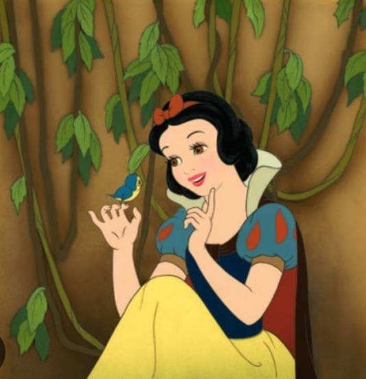

NATURE
October 3, 2024 by Reneece Bartley
Nature is full of beautiful sights and sounds. From tall mountains and flowing rivers to colorful flowers
and trees, every part of nature has its own charm. The seasons change how the world looks: spring brings
blooming flowers, summer has bright sunshine, autumn shows warm colors like orange and yellow, and winter
covers everything in soft snow. Nature not only gives us food and fresh air but also makes us feel calm
and happy, reminding us how important it is to take care of our planet.
Nature is not just about what we see; it also includes the sounds we hear and the smells we enjoy. The
chirping of birds, the rustling of leaves, and the gentle sound of water flowing all create a peaceful
atmosphere. Animals play an important role too, from busy bees pollinating flowers to playful squirrels
climbing trees. Every part of nature works together to create a healthy environment. Spending time
outdoors can make us feel refreshed and connected to the world around us.
SNOW WHITE
October 1, 2024 by Reneece Bartley

Snow White is a classic story about a lovely princess who is in danger from her jealous stepmother, the
Queen. To escape, Snow White runs into a magical forest where she meets seven friendly dwarfs. They help
her stay safe, but the wicked Queen keeps trying to harm her. In the end, it is a true love's kiss that
wakes Snow White from a deep sleep caused by a poisoned apple. This fairy tale teaches us about the
importance of kindness, friendship, and believing in happy endings.
After Snow White wakes up, she and the prince fall in love and decide to get married. The dwarfs are very
happy for her and join the celebration. Meanwhile, the wicked Queen learns that Snow White is still
alive and becomes furious. In a final attempt to hurt her, the Queen disguises herself and tries to trick
Snow White again. But the kindness and bravery of Snow White and her friends help protect her, showing
that good always wins in the end. The story ends with a joyful wedding and a reminder that love and
friendship are powerful.